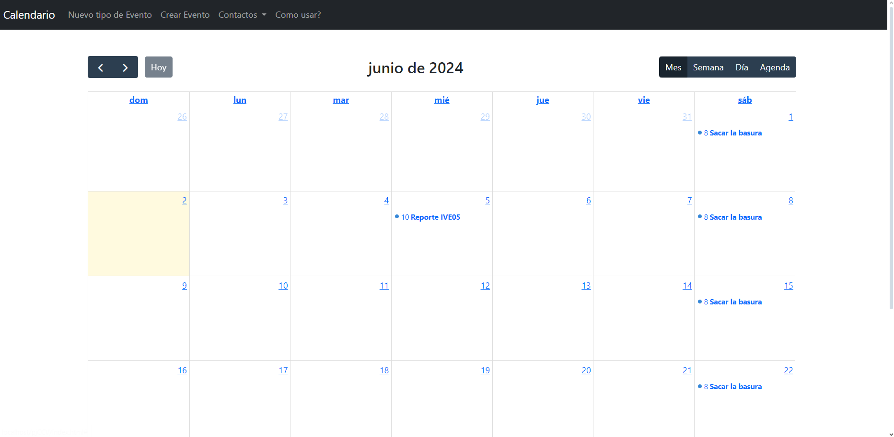
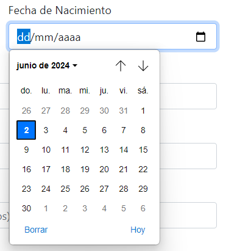
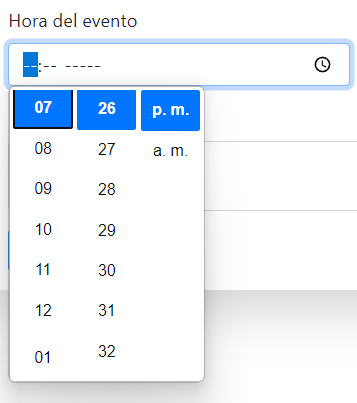
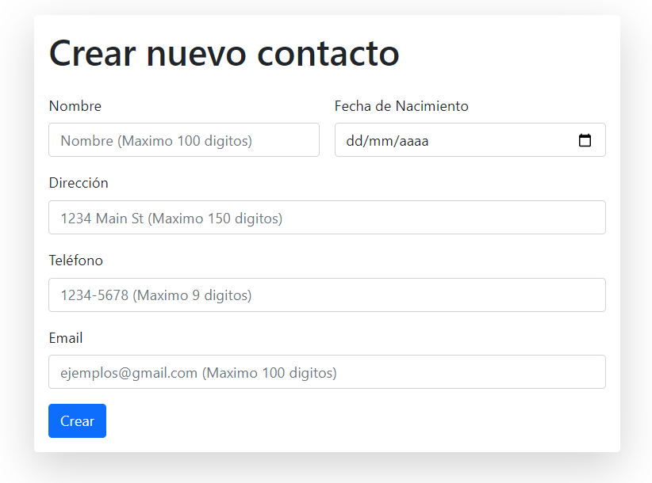

Nos complace presentarte nuestra plataforma, diseñada para facilitar la gestión de tus contactos y eventos de manera sencilla y eficiente. Nuestro Calendario es el aliado perfecto para mantenerte organizado y conectado, ya sea en el ámbito personal o profesional.
En la página principal, tendrás acceso a un calendario que muestra todos los eventos registrados hasta la fecha. En la parte superior, encontrarás varios botones que te permitirán navegar entre los meses y visualizar los diferentes eventos programados.
En la esquina superior derecha del calendario, encontrarás varios botones:
Para obtener detalles adicionales sobre un evento, simplemente haz clic en cualquier vista y selecciona el evento que desees.
En esta sección, tienes la capacidad de crear un nuevo tipo de evento definiendo dos parámetros principales: el nombre del tipo de evento (por ejemplo, Cumpleaños, Tarea, Pago) y su frecuencia de repetición:
En esta sección, puedes agregar un nuevo evento al calendario proporcionando los siguientes detalles: nombre del evento, fecha, hora, tipo de evento y una breve descripción.
Para seleccionar la fecha y hora, simplemente haz clic en los iconos correspondientes para abrir un menú de selección.
 En esta sección, puedes registrar amigos y familiares, añadiendo información como su cumpleaños, número telefónico, nombre, dirección y correo electrónico. Ten en cuenta: si el correo electrónico ya está asociado a otro contacto, no se registrará el nuevo contacto.
